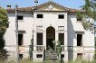

Renaissance Architecture
Introduction
Table Summary
| Early Renaissance ca. 1400-1500 |
High Renaissance ca. 1500-1525 |
Late Renaissance ca. 1525-1600 |
| Brunelleschi (churches), Alberti (facades) | Bramante (Tempietto), Palazzo Farnese | Palladio (villas) |
General Features
Renaissance architects rejected the intricacy and verticality of the Gothic style for the simplicity and balanced proportions of classicism. Rounded arches, domes, and the classical orders were revived (see Classical Orders). This revival was accomplished through direct observation of Roman ruins, as well as study of the treatise Ten Books on Architecture (the foremost surviving ancient work on architecture, written by Roman architect-engineer Vitruvius).5
Renaissance architecture tends to feature planar classicism (i.e. "flat classicism"). The walls of a Renaissance building (both exterior and interior) are embellished with classical motifs (e.g. columns, pilasters, pediments, blind arches) of minor physical depth, such that they intrude minimally on the two-dimensional appearance of the walls (see example). Put another way, the walls of a Renaissance building serve as flat canvases for a classical veneer. This contrasts sharply with Baroque architecture, in which walls are deeply curved and sculpted (resulting in "sculpted classicism").
{kind=link}
Planar classicism also tends to divide a wall into neat sections, using such elements as columns, pilasters, and stringcourses. (A stringcourse is a horizontal strip of material that runs along the exterior of a building, typically to mark the division between stories.) A Baroque wall, on the other hand, is treated as a continuous, undulating whole.27
The foremost Renaissance building types were the church, palazzo (urban mansion), and villa (country mansion). While various great names are associated with Renaissance church and palazzo design, the most famous villa architect by far is Palladio.
Although the Renaissance flourished in Italy ca. 1400-1600, it only diffused across the rest of Europe during the latter half of this period (see Diffusion of the Renaissance). Outside Italy, the transition to the Renaissance was slowed by devotion to the Gothic style. Consequently, much non-Italian Renaissance architecture embodies a fascinating blend of Gothic intricacy and verticality (including towers) with Renaissance simplicity and restraint.
The leading region of Renaissance architecture in northern Europe was France, where the primary building type was the chateau (country mansion). The influence of French Renaissance architecture diffused across northern Europe.H809
Classical architecture, in the broad sense of "architecture that employs classical elements", continued to flourish throughout the Baroque and Neoclassical periods. Classical architecture thus dominated the Western world for the period ca. 1500-1900. Even today, in modern buildings stripped of traditional ornamentation, aspects of classical architecture persist (e.g. balanced proportions, neatly-sectioned facades, classical mouldings).F169
Main Article
Early Renaissance
The two leading Early Renaissance architects were Brunelleschi and Alberti.
Filippo Brunelleschi, the first great Renaissance architect, was primarily a designer of churches. His most famous work is the octagonal brick dome of Florence Basilica (an Italian Gothic church), an engineering feat of such difficulty (given the dome's unprecedented size) that he also had to invent special machines to hoist each section into place.6 Brunelleschi's dome was the largest the pre-industrial world would ever see.
Brunelleschi's dome is crowned by a lantern: a rooftop structure with openings for lighting and/or ventilation. (Another common type of rooftop structure is the belfry, aka bell-tower.)
This dome is not considered a Renaissance work, however; its style is firmly Gothic.H691 The emergence of Renaissance architecture is rather seen in Brunelleschi's designs for complete buildings, of which the Basilica of San Lorenzo (Florence) may be the most famous. The plain exterior of this building includes a series of blind arches, while the interior is graced with crisp grey-and-white planar classicism; only the columns prevent this interior from being composed entirely of flat surfaces. (In many Renaissance churches, broad rectangular piers are used instead of columns, thus maximizing the surface space for planar classicism.)
Leon Battista Alberti became the most influential architectural theorist of the Early Renaissance with his own Ten Books on Architecture, which instructed on the adaptation of ancient classical forms to modern buildings.29 In terms of actual building projects, Alberti was the leading pioneer of classical facade design.F185-86,17 His greatest facades include the Church of Sant'Andrea and Palazzo Rucellai.
The facade of the Church of Sant'Andrea (Mantua) mimics a triumphal arch, while the facade of the Palazzo Rucellai (Florence) is neatly divided into rectangular sections (each containing an arched window) with pilasters and cosmetic entablatures. Circular elements, like those above each window of the Palazzo, were a Renaissance favourite, with many architects of the period regarding the circle as the "perfect shape".5
High Renaissance
The High Renaissance witnessed the pinnacle of classical simplicity and harmony in Renaissance art and architecture. The central plan layout (found in many Roman temples, most notably the Pantheon) was popular during this period.5 ("central plan" denotes rotational symmetry; if the plan is rotated around its central point, it looks the same at multiple points of rotation. Common shapes for central plan buildings are the circle, square, and octagon.)
The founder and leader of High Renaissance architecture was Donato Bramante.5,8 (Bramante is considered a member of the "High Renaissance trio", along with Michelangelo, the foremost sculptor of the period, and Raphael, the foremost painter.) His greatest completed work is the Tempietto, a Doric shrine erected upon the traditional site of St Peter's martyrdom. Despite its small size, the Tempietto is often considered the crowning work of High Renaissance architecture.
Bramante's greatest unrealized work is a central plan design for Saint Peter's Basilica (the foremost Roman Catholic church, located in Vatican City). Following Bramante's death early in this building's construction, persistent delays led to a string of architects taking over the project and completely transforming the original design.9
Had Bramante's plans been realized, St Peter's would undoubtedly be the foremost High Renaissance church. Instead, this position is occupied by the Church of Santa Maria in the town of Todi (north of Rome). This central plan building strongly resembles Bramante's architectural style, though it cannot be attributed to him with certainty.H737
The High Renaissance also gave rise to the Palazzo Farnese, arguably the greatest Renaissance palace. This building, designed principally by Antonio da Sangallo the Younger (a student of Bramante’s), follows the typical Renaissance palazzo layout: a three-story rectangular building with a central courtyard.28 A spartan majesty is achieved in the balanced height and breadth of the facade, the absence of vertical dividers, and the unadorned expanse of wall above each row of windows. The sheer simplicity of the facade emphasizes variations in wall colours, window shapes, and pediment shapes.
A popular decorative treatment of the palazzo was rustication, in which a masonry wall is textured rather than smooth. This can entail leaving grooves in the joints between smooth blocks, using roughly dressed blocks, or using blocks that have been deliberately textured. The rustication of a palazzo is often differentiated between stories.5
Late Renaissance
The Late Renaissance featured a general relaxation of the severe simplicity and order of the High Renaissance.
The most radical strain of Late Renaissance art was mannerism: the deliberate pursuit of novelty and complexity, often to the point of bizarreness. In mannerist painting and sculpture, human anatomy is strangely elongated, and figures are placed in complex, unnatural postures. In mannerist architecture, classical forms are skewed, exaggerated, and misplaced, and classical balance and harmony are sometimes distorted.13 By upsetting conventions and exploring new artistic possibilities, mannerism became an influential force, even for artists who chose to retain a more purely classical style.
One such artist was Andrea Palladio, who maintained a firmly classical aesthetic. Palladio, known primarily for villa design, was the foremost architect of the Late Renaissance, and arguably the most influential architect of all time. Countless residential, collegiate, and civic buildings throughout the world are descendants of Palladio's architectural style, which experienced a massive revival during the Neoclassical period.
Palladio's most striking innovation was to graft the classical temple front onto secular architecture.21 A true temple front is a portico (covered porch with columns), while a cosmetic temple front can be produced with a simple pediment. In either case the entrance can be recessed, which allows for a covered entrance even without a portico.
The common features of Palladio's villas, three of which are discussed here, are captured by the term Palladian style. Firstly, the overall plan is a central block flanked with identical wings, which ensures perfect symmetry; the central block is faced with a temple front. Secondly, the interior plan is also symmetrical, with a great hall at the centre (see example). And thirdly, the building has a tall major story and a short attic story.15,21
{kind=link}
Most of Palladio's villas match this description closely. In some cases, an exposed basement lies under the major story. A few villas have a second major story.
| portico facade | pediment facade | |
| standard | Villa Badoer Image credit: Marcok |
Villa Saraceno Image credit: Hans A. Rosbach |
Villa Rotonda Image credit: Stefan Bauer |
 Villa Forni Cerato Image credit: Hans A. Rosbach |
|
| two-story | Villa Cornaro Image credit: Hans A. Rosbach |
Villa Thiene Image credit: Hans A. Rosbach |
{kind=link}
{kind=link}
{kind=link}
{kind=link}
{kind=link}
{kind=link}
Palladio's villas were constructed mainly in and around the city of Vicenza, near Venice.5 Most feature walls of stucco-coated brick and hip roofs tiled in red clay shingles.21 Although Villa Rotonda is atypical of Palladio's work (being a central plan design with a portico on all four sides), it is also his most famous villa.
Apart from villas, Palladio is known for popularizing the Palladian arch (an arch flanked with rectangles) via his design for the exterior of the Vicenza Town Hall. This motif was practical as well as aesthetic, as it allowed more light to stream into the building than a series of ordinary arches.14 The Palladian arch is perhaps most familiar today in the form of Palladian windows (see example).
2 - "Renaissance: Economic and Social Basis of the Renaissance", Encarta. Accessed June 2009.
3 - "Renaissance: Politics in the Renaissance", Encarta. Accessed June 2009.
4 - "Architecture: Renaissance Architecture", Encarta. Accessed June 2009.
5 - "Western Architecture: The Renaissance", Encyclopedia Britannica. Accessed June 2009.
6 - "Filippo Brunelleschi", Encyclopedia Britannica. Accessed June 2009.
7 - "Filippo Brunelleschi", Encarta. Accessed June 2009.
8 - "Donato Bramante", Encarta. Accessed June 2009.
9 - "Bramante, Donato", Columbia. Accessed June 2009.
10 - "Sangallo Family", Encyclopedia Britannica. Accessed June 2009.
11 - "Sangallo", Columbia Encyclopedia. Accessed June 2009.
12 - "Mannerism", Encyclopedia Britannica. Accessed June 2009.
13 - "Mannerism", Encarta. Accessed June 2009.
14 - "Andrea Palladio", Encarta. Accessed June 2009.
15 - "Palladio, Andrea", Columbia Encyclopedia. Accessed June 2009.
16 - "Alberti, Leone Battista", Columbia Encyclopedia. Accessed June 2009.
17 - implied by coverage in 16
18 - "Palazzo Farnese", Encyclopedia Britannica. Accessed June 2009.
19 - "Michelangelo: The Last Decades", Encyclopedia Britannica. Accessed June 2009.
20 - "Vitruvius", Encyclopedia Britannica. Accessed January 2010.
21 - "Andrea Palladio", Encyclopedia Britannica. Accessed January 2010.
22 - "Byzantine Art", Encyclopedia Britannica. Accessed January 2010.
23 - "Landscape Architecture", Encarta 2004.
24 - "Villa", Encyclopedia Britannica. Accessed January 2010.
25 - "Michelozzo", Columbia Encyclopedia. Accessed January 2010.
26 - "Palace", Encyclopedia Britannica. Accessed January 2010.
27 - "Western Architecture: Baroque and Rococo", Encyclopedia Britannica. Accessed January 2010.
28 - "Michelozzo", Encyclopedia Britannica. Accessed January 2010.
29 - "Leon Battista Alberti", Encyclopedia Britannica. Accessed January 2010.